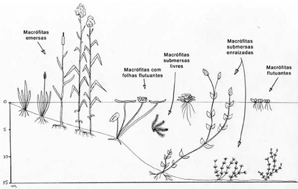
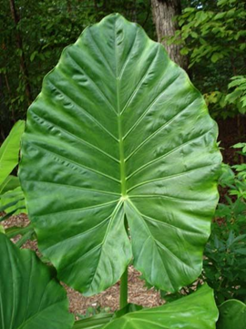
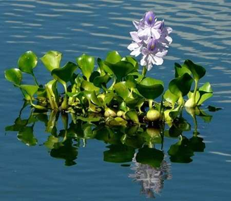
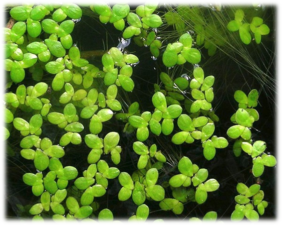
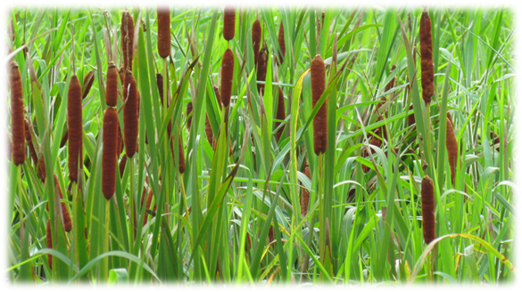

Fitorremediação como uma das alternativas para a limpeza dos manguezais
O projeto mais mangue tem o propósito de utilizar o processo de fitorremediação para a remoção de metais, substâncias tóxicas quer causam danos a esse ecossistema.
A fitorremediação é uma tecnologia que utiliza plantas para diminuir os poluentes que estão presentes no meio ambiente.
O processo de fitorremediação resulta na remoção dos poluentes por meio das raízes que crescem dentro do solo, tornando mais fácil a penetração e o alcance dos contaminantes nas áreas mais profundas. Assim que os poluentes são absorvidos, eles podem ficar armazenados nas raízes, caule ou folhas das plantas, causando a transformação do poluente em gases menos perigosos para a natureza. O tipo de poluente, a concentração e a presença de toxinas no solo ou na água devem estar dentro dos limites de tolerância da planta. Portanto, é fundamental conhecer o metabolismo do sistema vegetal a ser empregado e os fatores determinantes da técnica para posterior avaliação de sua eficiência.
Baixo custo de investimento e de operação, sua aplicabilidade in situ, e geração mínima de degradação e desestabilização da área a ser descontaminada são algumas das vantagens da fitorremediação.
O uso desse método é extremamente importante e benéfico para o meio ambiente, uma vez que ele se utiliza apenas de processos naturais, é muito mais econômico, ajuda no controle da erosão do solo, reduz os ruídos e melhora consideravelmente a qualidade do ar.
Comunidades - Macrófitas Aquáticas.
As macrófitas aquáticas podem ser encontradas nas margens e áreas rasas de rios, lagos, reservatórios e cachoeiras, fitotelmos, entre outros corpos de água. Quando a luz atinge o fundo do corpo d’água, podem se desenvolver em grandes bancos a mais de 10 m de profundidade.
Independente de aspectos taxonômicos, diferentes grupos de macrófitas aquáticas são reconhecidos. Os grupos ecológicos comumente aceitos são:
- Emersas: plantas enraizadas no sedimento com folhas acima da lâmina de água, como Echinochloa, Typha, etc;
- Flutuantes: plantas que se desenvolvem flutuando livremente no espelho de água, como Limnobium, Lemna, etc;
- Submersas enraizadas: plantas enraizadas crescendo submersas, como Vallisneria, Nitella, etc;
- Submersas livre: plantas com raízes pouco desenvolvidas, flutuando submersas em águas tranquilas, como Utricularia;
- Com folhas flutuantes: plantas enraizadas com folhas flutuando na lâmina d’água, como Nymphoides, etc.
Do ponto de vista taxonômico 42 famílias de dicotiledôneas, 30 de monocotiledôneas, 17 de briófitas e 6 de pteridófitas apresentam exemplares de plantas aquáticas.
Plantas úteis para o Processo de Fitorremediação
Orelha de Elefante – Alocasia
Em termos de sustentabilidade o uso dessa planta para a descontaminação de solo e da água por produtos químicos é interessante, pois a remediação ocorre in situ. Essa biotecnologia, chamada de fitorremediação, é conhecida há mais de três séculos.
E Alocasia macrorhiza é uma planta promissora para ser usada na descontaminação de solo e da água poluídos por metais pesados. Essa planta é recomendada como das espécies fitorremediadora devido a sua capacidade de acumular metais pesados, principalmente chumbo.
Aguapé
O aguapé é uma planta aquática flutuante que se desenvolve muito bem nas regiões de clima quente seu desenvolvimento é acelerado quando não existem limitações nutricionais, como é o caso das águas das lagoas e represas que são poluídas por esgoto urbano e alguns tipos de efluentes industriais.
Sua introdução nos sistemas de água das cidades brasileiras se deve justamente a sua característica de absorver e acumular poluentes, "filtrando" a água.
É capaz de retirar quantidades consideráveis de fenóis, metais pesados e outras substâncias tais como 0,7 mg de Cd/OS (peso seco) e 0,5 mg de Ni/g de peso seco (PS).
Os poluentes são removidos numa lagoa com aguapé por vários mecanismos físicos químicos e biológicos característicos do sistema. A sedimentação que ocorre na lagoa é mais eficiente pela proteção ao movimento das águas oferecida pela cobertura compacta de aguapé. Já a filtração dos sólidos suspensos pelas raízes do aguapé, é um dos mais importantes processos para o polimento da lagoa deve ser suficiente para que as raízes não se agarrem ao fundo, de tal forma que o fluxo da lagoa seja filtrado através da zona radicular.
Outro fator que favorece a remoção de poluentes em lagoas de aguapé decorre da existência de abrigo e condições para o crescimento de uma abundante biota fixa (perifíton) às suas raízes e folhas, tendo um papel importante na degradação, assimilação e remoção dos poluentes. Por si só, o aguapé assimila substâncias inorgânicas solúveis do meio aquático e, devido ao seu intenso crescimento, essa absorção se dá em grandes quantidades, como já ressaltado.
O aguapé em conjunto com lagoas de estabilização, proporciona uma maneira não só econômica como ecológica, para tratamento de esgotos em pequenas comunidades, lançando seus efluentes com alto padrão de qualidade, sem prejuízos aos corpos receptores.
Taioba
Não é comestível, seu uso é interessante para a biorremediação de áreas contaminadas com metais pesados.
Descoberta feita na Universidade Federal do Amazonas, em um doutorado que visava testar a capacidade de absorção de metais pesados como cádmio, cromo, cobre, chumbo, níquel e zinco, pela planta em questão, que é encontrada nas beiras de rios e córregos.
Lentilha d’água
É considerada a menor Angiosperma do mundo. Seu tamanho é diminuto, cerca de 5 mm, tem a forma arredondada e possui duas folhinhas acopladas e uma única raiz. Sua flor é diminuta e passa despercebida. Possui um estigma com dois estames.
Em meio aquático, indiferente à qualidade da água. Isto a torna excelente para recuperação de águas poluídas. Produz fruto e semente viável, mas sua reprodução é mais vegetativa. Novas folhinhas nascem de gemas entre as folhas, ficando acopladas a elas até estarem mais desenvolvidas, soltando-se depois. Sua velocidade de reprodução é assombrosa e com rapidez preenchem os espaços na água.
Tem grande capacidade de conversão de CO2 em oxigênio o que a torna altamente desejável para água cinzas.
Taboa
É uma depuradora de águas poluídas, absorvendo metais pesados inclusive o cobre.
Tem grande capacidade de absorver metais pesados podendo servir para limpeza de águas contaminadas em projetos de fitorremediação.